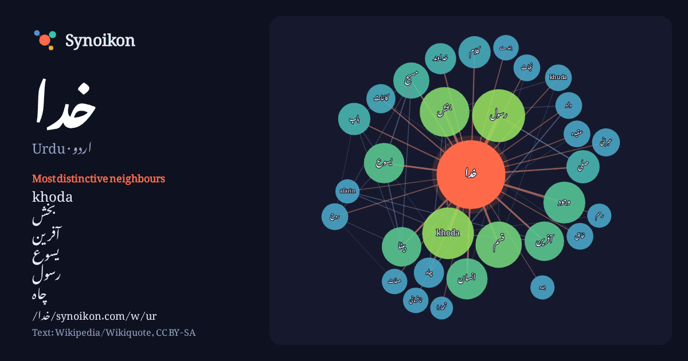

اردو · Urdu · popular word
خدا
“god” · The words found around it in 1140 instances from Urdu Wikipedia, Wikiquote.

Most distinctive neighbours
- khoda 40×
- بخش 24×
- آفرین 24×
- یسوع 21×
- رسول 17×
- چاہ 14×
- خداوند 14×
- وجود 14×
- بیٹا 13×
- khuda 12×
- قسم 12×
- مسیح 12×
- عبرانی 11×
- نافرمانی 10×
- بندے 10×
- خالق 9.9×
- afarin 9.9×
- داد 9.8×
- انسان 9.8×
- کائنات 9.5×
× = how many times more often than in general Urdu Wikipedia text.
Most frequent neighbours
- میں 288
- کا 244
- سے 175
- کو 169
- اس 124
- نے 116
- نہیں 85
- جو 74
- یا 62
- وہ 57
- ان 52
- واقع 52
- بھی 43
- رسول 43
- لیے 43
- مجموعی 43
- khoda 41
- بخش 38
- آبادی 37
- اللہ 37
In context
- خدا کے لیے فارسی زبان کا لفظ ہے۔ اصل میں، یہ اہورا مزدا (زرتشتیت میں خدا کا نام) کے حوالے سے بطور اسم استعمال ہوتا تھا۔ ایرانی زبانیں، ترک زبانیں اور بہت Wikipedia snippets · خدا
- خدا ایک واحد رب، معبود یا پروردگار کے لیے استعمال ہوا ہے انگریزی میں اس کو حرفِ کبیر سے شروع کر کے خدا لکھا جاتا ہے اور یہ واحد، یکتا اور ناقابلِ شریک Wikipedia snippets · یہودیت میں خدا کا تصور
- حتیٰ کہ انسانوں کو بھی خدا کا پَرتو جانتے ہیں۔ یعنی عام ہندو کے لیے ہر شے خدا ہے۔ خدا کے نام تصورات خدا مذاہب عالم اور تصور خدا اور اسلام کے بارے میں غیر Wikipedia snippets · ہندومت میں خدا کا تصور
- ربوبیت یا الٰہ سے الٰہیت یا خدا پرستی (انگریزی: Deism) ایک عقیدہ جس کے مطابق خدا خالق تو ہے لیکن عالم کی تخلیق کے بعد اُس نے اس کائنات سے اپنا تعلق بالکل Wikipedia snippets · خدا پرستی
- خدا بیٹا یا ابن اللہ سے مراد مسیحی کے نزدیک خدا کی صفت کلام (Word of God) ہے۔ انسانوں کی صفت کلام اور خدا کی صفت کلام کے درمیان میں فرق بیان کرتے ہوئے Wikipedia snippets · خدا بیٹا
- خدا کے نام ہر مذہب میں اور ہر زبان میں الگ الگ ہیں، خدا کی صفات ذاتی اور عام طور پر ہر مذہب اور زبان میں مماثلت کی حامل ہیں کہ وہ خالق ہے، مالک ہے، رزق Wikipedia snippets · خدا کے نام
- خدا بخش اورینٹل پبلک لائبریری (ہندی: ख़ुदा बख़्श मशरिक़ी किताब ख़ाना، اردو: خدا بخش مشرقی کتب خانہ) بھارت کے قومی کتب خانوں میں سے ایک ہے۔ یہ کتب خانہ Wikipedia snippets · خدا بخش اورینٹل پبلک لائبریری
- جعفرآباد، خدا آفریں (انگریزی: Jafarabad, Khoda Afarin) ایران کا ایک رہائشی علاقہ جو Minjavan-e Sharqi Rural District میں واقع ہے۔ جعفرآباد، خدا آفریں کی Wikipedia snippets · جعفرآباد، خدا آفریں
More Urdu words
Precomputed on 2026-10-09 with default settings (±5 words, medium corpus). The interactive map can refresh it with live data.